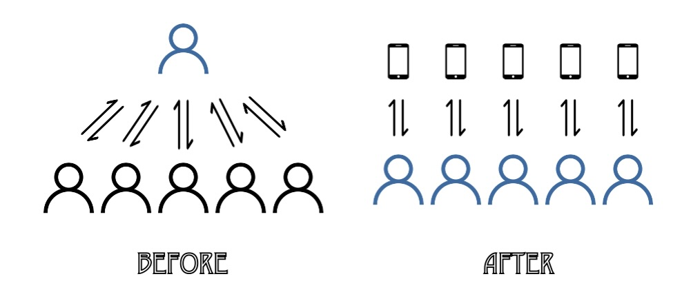
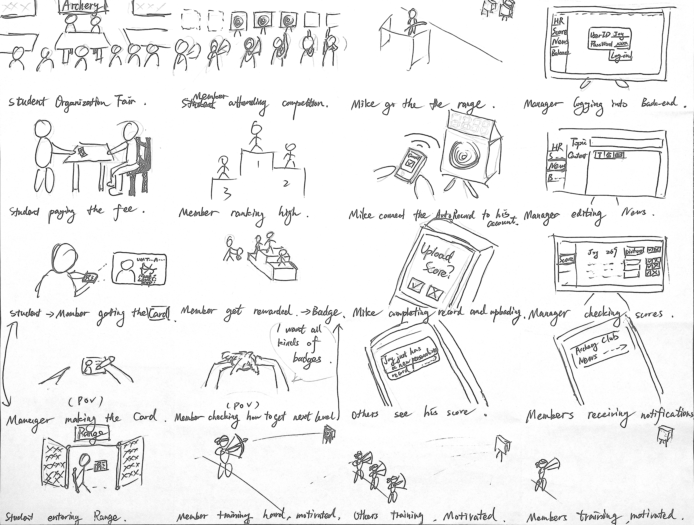
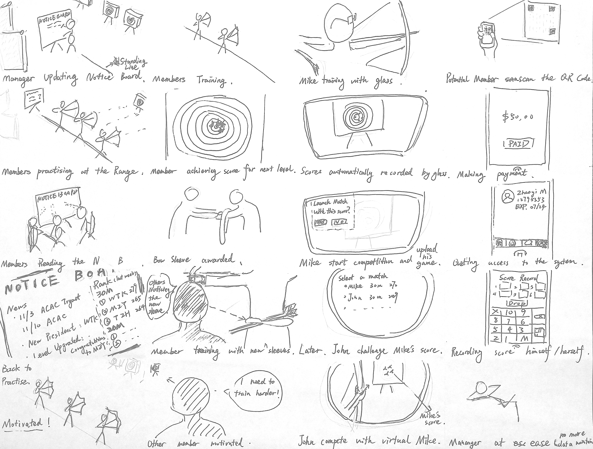
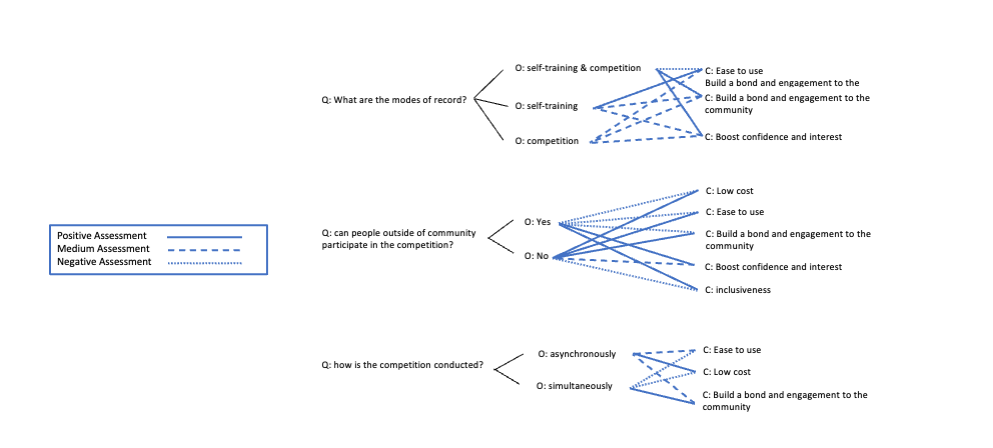

To run a traditional archery club can be difficult, especially during pandemic. Without the opportunity of communicating and competing face to face, members were less likely to participate. Therefore, how to better engage the members by collecting and releasing information at a lower cost is the problem I tried to solve here.
Solution
My solution is to build a mobile app, to realize better information management for both the organization managers and the members. It relieves the board members from arduous information collecting and delivering so that they can focus on holding interesting events and provide better training service. The data generating and disseminating work will be distributed to the users and the app. More importantly, the users, who have been unconsciously helping the manager record data, will probably become a real archery lover with the help of the app.
How?

The system will automatically generate a visualization of the users' progress on archery to highlight their milestones, which makes it more fun and way easier for the users to track their own progress and build perseverance. At the same time, their personal records will have the chance to be posted within the community, which will motivate the users and cultivate a positively competitive environment.
Process
Ethnography Research
Ethnography research is a immersive field study approach that enable UX researchers to really observe and experience their target community or user, to gain deep and detailed insight about the needs, goals, pain points and motivations. I didn't intentionally conduct ethnography research, which makes my data gathering about this community even more successful - I actually participated into the training, the management and the competition within Shanghai University's Traidtion Archery Club for three years. This is how I get the original data about what this organization need, how it is run and how to effectively engage all the members.
Personas
Based on the data gathered from former ethnography research and several additional interview, I created 4 personas to comprehesively represent different users' goals and needs. The process creating personas let me discover some user needs that I had being looking over such as the goal of getting socialized. Therefore, personas did a great job helping me construct a engagement system that utilizing multiple motivations of users.
QOC
I used QOC Method (Question, Option, Criteria) to help make the final choice of alternative solutions. Going though the flow, Questions about exactly how to solve issues or providing what kind of features were asked, so I brainstomed several Options as solutions for these Questions along the way, generating scenarios and sketches.


However, for the final product, I'll have to make decisions which Option to employ. That's why I needed QOC Method for the criteria that could ensure reasonable selection process. I reflected on the need of target user and created a list of Criteria for each Option and chose the Option that met the most and the most important Creteria.

Paper Prototye
Me being a professional about archery community might give me too much confidence leading to arbitrary judgement. The paper prototype is another key method I utilized to overcome this.
I tested the paper prototype with 3 current members of the community to confront my potential subjective impression and keep up with the newest change.
Digital Prototye
What I Learned
Creating prototype is like coding, the concept of object and inheritance make it eaiser.
Even most basic visual design has direct affect on user experience, such as the right font size, color and layout of the elements.